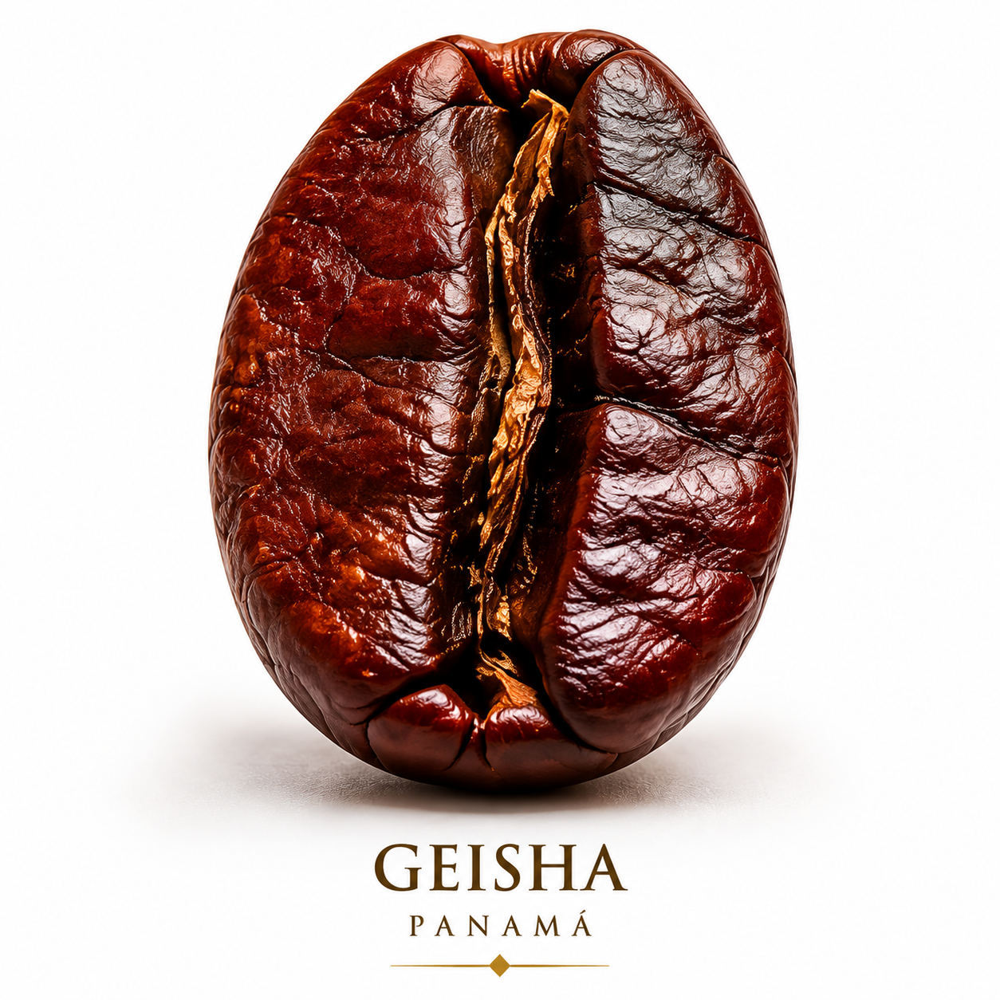
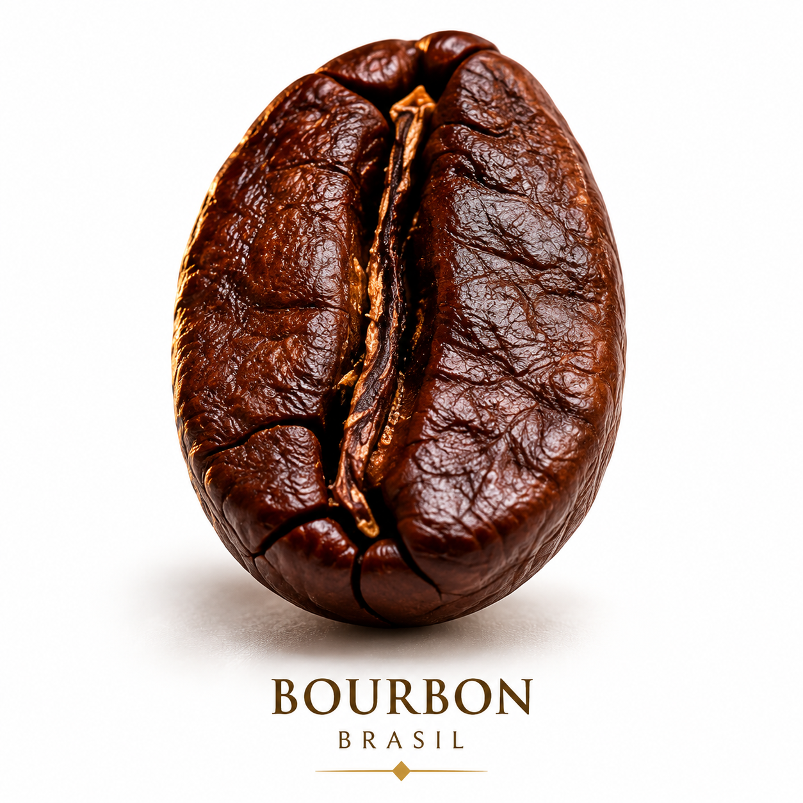
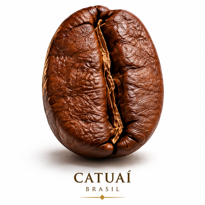
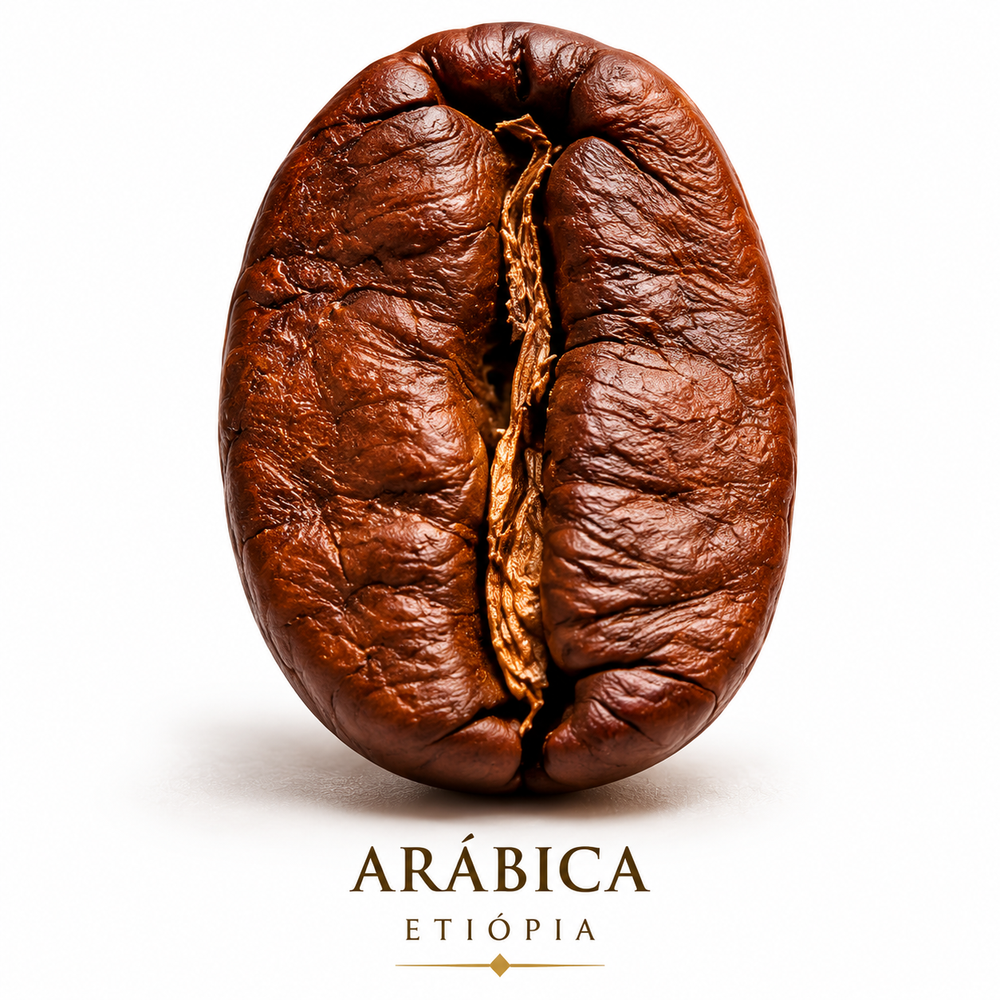
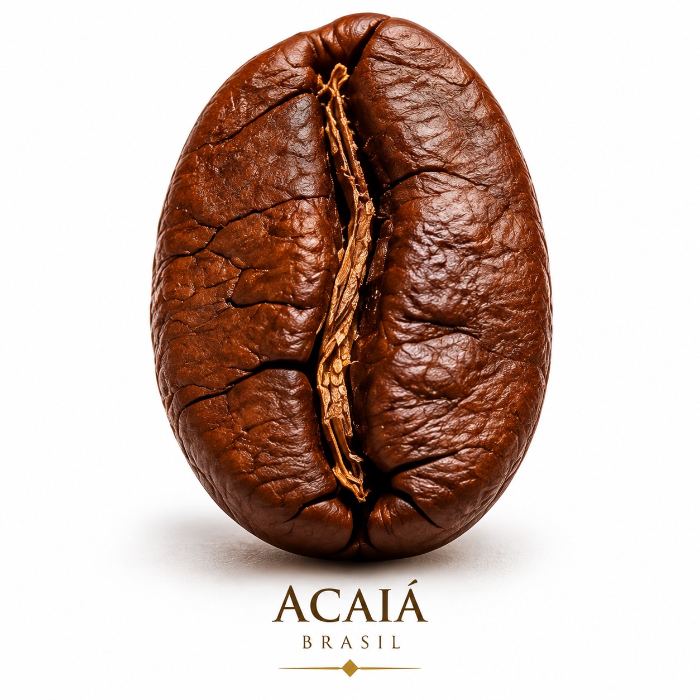

Quero preparar no com 350 ml de água.

Arábica traz notas florais e doçura. Bourbon é encorpado, com chocolate no fundo. Geisha entrega delicadeza e um aroma que não se esquece. Escolher o grão é escolher de onde a xícara começa.
Ver as variedades
BourbonChocolate · encorpado
CatuaíFrutado · brilhante
ArábicaDoce · equilibrado
AcaiáTerroso · profundoV60 entrega clareza e brilho. Aeropress é versátil e perdoa o erro. French Press dá profundidade. Italiana concentra e aquece. Seu ritmo decide qual faz sentido hoje.
Ver os métodos